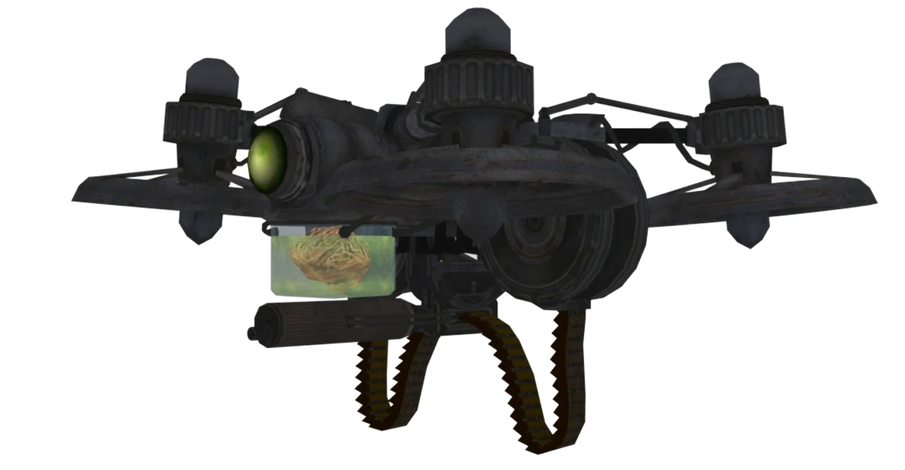

Dron de Maxis
Conseguir 3 piezas y construirlo en alguna mesa de construcción.

- El Cerebro de Maxis: Está en el inicio, en una mesa, contiene líquido verde lima
- Cuerpo Metálico: Tiene 3 localizaciones;
- Al final del túnel de hielo.
- En el camino de barro por donde sale el tanque, a la izquierda.
- En el camino de barro por donde llega el tanque, a la derecha.
- Los Rotores: También 3 localizaciones;
- En la excavación, arriba, a la derecha del arma de pared.
- En el piso inferior, bajando de las escaleras de madera.
- En el piso de madera, justo arriba donde se crean los bastones.